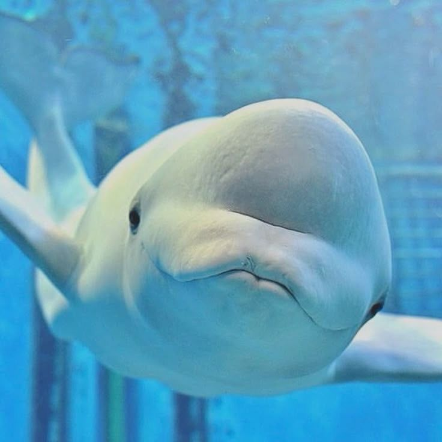

Tortuga Marina (Chelonia mydas)
Habita en aguas tropicales y subtropicales alrededor del mundo. Su nombre proviene del color verdoso de su grasa corporal, el cual adquiere debido a su dieta basada principalmente en algas y pastos marinos.
Ver video
León Marino (Zalophus californianus)
Destaca por su gran agilidad bajo el agua y su carácter sumamente juguetón con los humanos. Su curiosidad natural lo impulsa a acercarse a los buceadores para investigar las cámaras y jugar con las burbujas.
Ver video
Ballena Beluga (Delphinapterus leucas)
Posee un cuerpo moldeable perfectamente adaptado al frío extremo de los mares polares donde habita. Su característico color blanco le sirve de camuflaje idóneo entre los témpanos de hielo para evadir a grandes depredadores.
Ver video